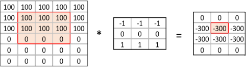

Content from Introduction
Last updated on 2023-08-07 | Edit this page
Overview
Questions
- “What is Deep Learning?”
- “When does it make sense to use and not use Deep Learning?”
- “When is it successful?”
- “What are the tools involved?”
- “What is the workflow for Deep Learning?”
- “Why did we choose to use Keras in this lesson?”
Objectives
- “Recall the sort of problems for which Deep Learning is a useful tool”
- “List some of the available tools for Deep Learning”
- “Recall the steps of a Deep Learning workflow”
- “Identify the inputs and outputs of a deep neural network.”
- “Explain the operations performed in a single neuron”
- “Test that you have correctly installed the Keras, Seaborn and Sklearn libraries”
What is Deep Learning?
Deep Learning, Machine Learning and Artificial Intelligence
Deep Learning (DL) is just one of many techniques collectively known as machine learning. Machine learning (ML) refers to techniques where a computer can “learn” patterns in data, usually by being shown numerous examples to train it. People often talk about machine learning being a form of artificial intelligence (AI). Definitions of artificial intelligence vary, but usually involve having computers mimic the behaviour of intelligent biological systems. Since the 1950s many works of science fiction have dealt with the idea of an artificial intelligence which matches (or exceeds) human intelligence in all areas. Although there have been great advances in AI and ML research recently we can only come close to human like intelligence in a few specialist areas and are still a long way from a general purpose AI. The image below shows some differences between artificial intelligence, Machine Learning and Deep Learning.

The image above is by Tukijaaliwa, CC BY-SA 4.0, via Wikimedia Commons, original source
{kind=link}
Neural Networks
A neural network is an artificial intelligence technique loosely based on the way neurons in the brain work.
A single neuron
A neural network consists of connected computational units called neurons. Each neuron …
- has one or more inputs, e.g. input data expressed as floating point numbers
- most of the time, each neuron conducts 3 main operations:
- take the weighted sum of the inputs
- add an extra constant weight (i.e. a bias term) to this weighted sum
- apply a non-linear function to the output so far (using a predefined activation function)
- return one output value, again a floating point number
Combinging multiple neurons into a network
Multiple neurons can be joined together by connecting the output of one to the input of another. These connections are associated with weights that determine the ‘strength’ of the connection, the weights are adjusted during training. In this way, the combination of neurons and connections describe a computational graph, an example can be seen in the image below. In most neural networks neurons are aggregated into layers. Signals travel from the input layer to the output layer, possibly through one or more intermediate layers called hidden layers. The image below shows an example of a neural network with three layers, each circle is a neuron, each line is an edge and the arrows indicate the direction data moves in.
 The image above is by Glosser.ca, CC BY-SA 3.0 https://creativecommons.org/licenses/by-sa/3.0, via
Wikimedia Commons, original
source
The image above is by Glosser.ca, CC BY-SA 3.0 https://creativecommons.org/licenses/by-sa/3.0, via
Wikimedia Commons, original
source
{kind=link}
Weighted sum of input: 0 * (-1) + 0.5 * (-0.5) + 1 * 0.5 = 0.25
Add the bias: 0.25 + 1 = 1.25
Apply activation function: max(1.25, 0) = 1.25
So, neuron output = 1.25
What makes deep learning deep learning?
Neural networks aren’t a new technique, they have been around since the late 1940s. But until around 2010 neural networks tended to be quite small, consisting of only 10s or perhaps 100s of neurons. This limited them to only solving quite basic problems. Around 2010 improvements in computing power and the algorithms for training the networks made much larger and more powerful networks practical. These are known as deep neural networks or Deep Learning.
Deep Learning requires extensive training using example data which shows the network what output it should produce for a given input. One common application of Deep Learning is classifying images. Here the network will be trained by being “shown” a series of images and told what they contain. Once the network is trained it should be able to take another image and correctly classify its contents. But we are not restricted to just using images, any kind of data can be learned by a Deep Learning neural network. This makes them able to appear to learn a set of complex rules only by being shown what the inputs and outputs of those rules are instead of being taught the actual rules. Using these approaches Deep Learning networks have been taught to play video games and even drive cars. The data on which networks are trained usually has to be quite extensive, typically including thousands of examples. For this reason they are not suited to all applications and should be considered just one of many machine learning techniques which are available.
While traditional “shallow” networks might have had between three and five layers, deep networks often have tens or even hundreds of layers. This leads to them having millions of individual weights. The image below shows a diagram of all the layers (there are too many neurons to draw them all) on a Deep Learning network designed to detect pedestrians in images. The input (left most) layer of the network is an image and the final (right most) layer of the network outputs a zero or one to determine if the input data belongs to the class of data we are interested in. This image is from the paper “An Efficient Pedestrian Detection Method Based on YOLOv2” by Zhongmin Liu, Zhicai Chen, Zhanming Li, and Wenjin Hu published in Mathematical Problems in Engineering, Volume 2018

What sort of problems can Deep Learning solve?
- Pattern/object recognition
- Segmenting images (or any data)
- Translating between one set of data and another, for example natural language translation.
- Generating new data that looks similar to the training data, often
used to create synthetic datasets, art or even “deepfake” videos.
- This can also be used to give the illusion of enhancing data, for example making images look sharper, video look smoother or adding colour to black and white images. But beware of this, it is not an accurate recreation of the original data, but a recreation based on something statistically similar, effectively a digital imagination of what that data could look like.
What sort of problems can Deep Learning not solve?
- Any case where only a small amount of training data is available.
- Tasks requiring an explanation of how the answer was arrived at.
- Classifying things which are nothing like their training data.
What sort of problems can Deep Learning solve, but should not be used for?
Deep Learning needs a lot of computational power, for this reason it often relies on specialised hardware like graphical processing units (GPUs). Many computational problems can be solved using less intensive techniques, but could still technically be solved with Deep Learning.
The following could technically be achieved using Deep Learning, but it would probably be a very wasteful way to do it:
- Logic operations, such as computing totals, averages, ranges etc. (see this example applying Deep Learning to solve the “FizzBuzz” problem often used for programming interviews)
- Modelling well defined systems, where the equations governing them are known and understood.
- Basic computer vision tasks such as edge detection, decreasing colour depth or blurring an image.
Deep Learning Problems Exercise
Which of the following would you apply Deep Learning to?
- Recognising whether or not a picture contains a bird.
- Calculating the median and interquartile range of a dataset.
- Identifying MRI images of a rare disease when only one or two example images available for training.
- Identifying people in pictures after being trained only on cats and dogs.
- Translating English into French.
- and 5 are the sort of tasks often solved with Deep Learning.
- is technically possible but solving this with Deep Learning would be extremely wasteful, you could do the same with much less computing power using traditional techniques.
- will probably fail because there is not enough training data.
- will fail because the Deep Learning system only knows what cats and dogs look like, it might accidentally classify the people as cats or dogs.
How much data do you need for Deep Learning?
The rise of Deep Learning is partially due to the increased availability of very large datasets. But how much data do you actually need to train a Deep Learning model? Unfortunately, this question is not easy to answer. It depends, among other things, on the complexity of the task (which you often do not know beforehand), the quality of the available dataset and the complexity of the network. For complex tasks with large neural networks, we often see that adding more data continues to improve performance. However, this is also not a generic truth: if the data you add is too similar to the data you already have, it will not give much new information to the neural network.
What if I do not have enough data?
In case you have too little data available to train a complex network from scratch, it is sometimes possible to use a pretrained network that was trained on a similar problem. Another trick is data augmentation, where you expand the dataset with artificial data points that could be real. An example of this is mirroring images when trying to classify cats and dogs. An horizontally mirrored animal retains the label, but exposes a different view.
Deep Learning workflow
To apply Deep Learning to a problem there are several steps we need to go through:
1. Formulate/ Outline the problem
Firstly we must decide what it is we want our Deep Learning system to do. Is it going to classify some data into one of a few categories? For example if we have an image of some hand written characters, the neural network could classify which character it is being shown. Or is it going to perform a prediction? For example trying to predict what the price of something will be tomorrow given some historical data on pricing and current trends.
2. Identify inputs and outputs
Next we need to identify what the inputs and outputs of the neural network will be. This might require looking at our data and deciding what features of the data we can use as inputs. If the data is images then the inputs could be the individual pixels of the images.
For the outputs we will need to look at what we want to identify from the data. If we are performing a classification problem then typically we will have one output for each potential class.
3. Prepare data
Many datasets are not ready for immediate use in a neural network and will require some preparation. Neural networks can only really deal with numerical data, so any non-numerical data (for example words) will have to be somehow converted to numerical data.
Next we will need to divide the data into multiple sets. One of these will be used by the training process and we will call it the training set. Another will be used to evaluate the accuracy of the training and we will call that one the test set. Sometimes we will also use a 3rd set known as a validation set to tune hyperparameters.
4. Choose a pre-trained model or build a new architecture from scratch
Often we can use an existing neural network instead of designing one from scratch. Training a network can take a lot of time and computational resources. There are a number of well publicised networks which have been shown to perform well at certain tasks, if you know of one which already does a similar task well then it makes sense to use one of these.
If instead we decide we do want to design our own network then we need to think about how many input neurons it will have, how many hidden layers and how many outputs, what types of layers we use (we will explore the different types later on). This will probably need some experimentation and we might have to try tweaking the network design a few times before we see acceptable results.
5. Choose a loss function and optimizer
The loss function tells the training algorithm how far away the predicted value was from the true value. We will look at choosing a loss function in more detail later on.
The optimizer is responsible for taking the output of the loss function and then applying some changes to the weights within the network. It is through this process that the “learning” (adjustment of the weights) is achieved.
6. Train the model
We can now go ahead and start training our neural network. We will probably keep doing this for a given number of iterations through our training dataset (referred to as epochs) or until the loss function gives a value under a certain threshold. The graph below show the loss against the number of epochs, generally the loss will go down with each epoch, but occasionally it will see a small rise.
7. Perform a Prediction/Classification
After training the network we can use it to perform predictions. This is the mode you would use the network in after you have fully trained it to a satisfactory performance. Doing predictions on a special hold-out set is used in the next step to measure the performance of the network.
8. Measure Performance
Once we trained the network we want to measure its performance. To do this we use some additional data that was not part of the training, this is known as a test set. There are many different methods available for measuring performance and which one is best depends on the type of task we are attempting. These metrics are often published as an indication of how well our network performs.
9. Tune Hyperparameters
Hyperparameters are all the parameters set by the person configuring the machine learning instead of those learned by the algorithm itself. The hyperparameters include the number of epochs or the parameters for the optimizer. It might be necessary to adjust these and re-run the training many times before we are happy with the result.
10. Share Model
Now that we have a trained network that performs at a level we are happy with we can go and use it on real data to perform a prediction. At this point we might want to consider publishing a file with both the architecture of our network and the weights which it has learned (assuming we did not use a pre-trained network). This will allow others to use it as as pre-trained network for their own purposes and for them to (mostly) reproduce our result.
Deep Learning workflow exercise
Think about a problem you would like to use Deep Learning to solve.
- What do you want a Deep Learning system to be able to tell you?
- What data inputs and outputs will you have?
- Do you think you will need to train the network or will a pre-trained network be suitable?
- What data do you have to train with? What preparation will your data need? Consider both the data you are going to predict/classify from and the data you will use to train the network.
Discuss your answers with the group or the person next to you.
Deep Learning Libraries
There are many software libraries available for Deep Learning including:
TensorFlow
TensorFlow was developed by Google and is one of the older Deep Learning libraries, ported across many languages since it was first released to the public in 2015. It is very versatile and capable of much more than Deep Learning but as a result it often takes a lot more lines of code to write Deep Learning operations in TensorFlow than in other libraries. It offers (almost) seamless integration with GPU accelerators and Google’s own TPU (Tensor Processing Unit) chips that are built specially for machine learning.
PyTorch
PyTorch was developed by Facebook in 2016 and is a popular choice for Deep Learning applications. It was developed for Python from the start and feels a lot more “pythonic” than TensorFlow. Like TensorFlow it was designed to do more than just Deep Learning and offers some very low level interfaces. PyTorch Lightning offers a higher level interface to PyTorch to set up experiments. Like TensorFlow it is also very easy to integrate PyTorch with a GPU. In many benchmarks it outperforms the other libraries.
Keras
Keras is designed to be easy to use and usually requires fewer lines of code than other libraries. We have chosen it for this workshop for that reason. Keras can actually work on top of TensorFlow (and several other libraries), hiding away the complexities of TensorFlow while still allowing you to make use of their features.
The performance of Keras is sometimes not as good as other libraries and if you are going to move on to create very large networks using very large datasets then you might want to consider one of the other libraries. But for many applications the performance difference will not be enough to worry about and the time you will save with simpler code will exceed what you will save by having the code run a little faster.
Keras also benefits from a very good set of online documentation and a large user community. You will find that most of the concepts from Keras translate very well across to the other libraries if you wish to learn them at a later date.
Installing Keras and other dependencies
Follow the instructions in the setup document to install Keras, Seaborn and Sklearn.
Testing Keras Installation
Lets check you have a suitable version of Keras installed. Open up a new Jupyter notebook or interactive python console and run the following commands:
PYTHON
from tensorflow import keras
print(keras.__version__)OUTPUT
2.12.0You should get a version number reported. At the time of writing 2.12.0 is the latest version.
Testing Seaborn Installation
Lets check you have a suitable version of seaborn installed. In your Jupyter notebook or interactive python console run the following commands:
PYTHON
import seaborn
print(seaborn.__version__)OUTPUT
0.12.2You should get a version number reported. At the time of writing 0.12.2 is the latest version.
Testing Sklearn Installation
Lets check you have a suitable version of sklearn installed. In your Jupyter notebook or interactive python console run the following commands:
PYTHON
import sklearn
print(sklearn.__version__)OUTPUT
1.2.2You should get a version number reported. At the time of writing 1.2.2 is the latest version.
Keypoints
- “Machine learning is the process where computers learn to recognise patterns of data.”
- “Artificial neural networks are a machine learning technique based on a model inspired by groups of neurons in the brain.”
- “Artificial neural networks can be trained on example data.”
- “Deep Learning is a machine learning technique based on using many artificial neurons arranged in layers.”
- “Deep Learning is well suited to classification and prediction problems such as image recognition.”
- “To use Deep Learning effectively we need to go through a workflow of: defining the problem, identifying inputs and outputs, preparing data, choosing the type of network, choosing a loss function, training the model, tuning Hyperparameters, measuring performance before we can classify data.”
- “Keras is a Deep Learning library that is easier to use than many of the alternatives such as TensorFlow and PyTorch.”
Content from Classification by a neural network using Keras
Last updated on 2023-08-07 | Edit this page
Overview
Questions
- “What is a neural network?”
- “How do I compose a Neural Network using Keras?”
- “How do I train this network on a dataset?”
- “How do I get insight into learning process?”
- “How do I measure the performance of the network?”
Objectives
- “Use the deep learning workflow to structure the notebook”
- “Explore the dataset using pandas and seaborn”
- “Use one-hot encoding to prepare data for classification in Keras”
- “Describe a fully connected layer”
- “Implement a fully connected layer with Keras”
- “Use Keras to train a small fully connected network on prepared data”
- “Interpret the loss curve of the training process”
- “Use a confusion matrix to measure the trained networks’ performance on a test set”
Introduction
In this episode we will learn how to create and train a Neural Network using Keras to solve a simple classification task.
The goal of this episode is to quickly get your hands dirty in actually defining and training a neural network, without going into depth of how neural networks work on a technical or mathematical level. We want you to go through the most commonly used deep learning workflow that was covered in the introduction. As a reminder below are the steps of the deep learning workflow:
- Formulate / Outline the problem
- Identify inputs and outputs
- Prepare data
- Choose a pretrained model or start building architecture from scratch
- Choose a loss function and optimizer
- Train the model
- Perform a Prediction/Classification
- Measure performance
- Tune hyperparameters
- Save model
In this episode we will focus on a minimal example for each of these steps, later episodes will build on this knowledge to go into greater depth for some or all of these steps.
GPU usage
For this lesson having a GPU (graphics card) available is not needed. We specifically use very small toy problems so that you do not need one. However, Keras will use your GPU automatically when it is available. Using a GPU becomes necessary when tackling larger datasets or complex problems which require a more complex Neural Network.
1. Formulate/outline the problem: penguin classification
In this episode we will be using the penguin dataset, this is a dataset that was published in 2020 by Allison Horst and contains data on three different species of the penguins.
We will use the penguin dataset to train a neural network which can classify which species a penguin belongs to, based on their physical characteristics.
The palmerpenguins data contains size measurements for
three penguin species observed on three islands in the Palmer
Archipelago, Antarctica. The physical attributes measured are flipper
length, beak length, beak width, body mass, and sex.
 Artwork by @allison_horst
Artwork by @allison_horst
 Artwork by @allison_horst
Artwork by @allison_horst
These data were collected from 2007 - 2009 by Dr. Kristen Gorman with the Palmer Station Long Term Ecological Research Program, part of the US Long Term Ecological Research Network. The data were imported directly from the Environmental Data Initiative (EDI) Data Portal, and are available for use by CC0 license (“No Rights Reserved”) in accordance with the Palmer Station Data Policy.
2. Identify inputs and outputs
To identify the inputs and outputs that we will use to design the neural network we need to familiarize ourselves with the dataset. This step is sometimes also called data exploration.
We will start by importing the Seaborn library that will help us get the dataset and visualize it. Seaborn is a powerful library with many visualizations. Keep in mind it requires the data to be in a pandas dataframe, luckily the datasets available in seaborn are already in a pandas dataframe.
PYTHON
import seaborn as snsWe can load the penguin dataset using
PYTHON
penguins = sns.load_dataset('penguins')This will give you a pandas dataframe which contains the penguin data.
1. Using the pandas head function you
can see the names of the features. Using the describe
function we can also see some statistics for the numeric columns
PYTHON
penguins.head()| species | island | bill_length_mm | bill_depth_mm | flipper_length_mm | body_mass_g | sex | |
|---|---|---|---|---|---|---|---|
| 0 | Adelie | Torgersen | 39.1 | 18.7 | 181.0 | 3750.0 | Male |
| 1 | Adelie | Torgersen | 39.5 | 17.4 | 186.0 | 3800.0 | Female |
| 2 | Adelie | Torgersen | 40.3 | 18.0 | 195.0 | 3250.0 | Female |
| 3 | Adelie | Torgersen | NaN | NaN | NaN | NaN | NaN |
| 4 | Adelie | Torgersen | 36.7 | 19.3 | 193.0 | 3450.0 | Female |
PYTHON
penguins.describe()| bill_length_mm | bill_depth_mm | flipper_length_mm | body_mass_g | |
|---|---|---|---|---|
| count | 342.000000 | 342.000000 | 342.000000 | 342.000000 |
| mean | 43.921930 | 17.151170 | 200.915205 | 4201.754386 |
| std | 5.459584 | 1.974793 | 14.061714 | 801.954536 |
| min | 32.100000 | 13.100000 | 172.000000 | 2700.000000 |
| 25% | 39.225000 | 15.600000 | 190.000000 | 3550.000000 |
| 50% | 44.450000 | 17.300000 | 197.000000 | 4050.000000 |
| 75% | 48.500000 | 18.700000 | 213.000000 | 4750.000000 |
| max | 59.600000 | 21.500000 | 231.000000 | 6300.000000 |
2. We can get the unique values in the
species column using the unique function of
pandas. It shows the target class is stored as a string and has 3 unique
values. This type of column is usually called a ‘categorical’
column.
PYTHON
penguins["species"].unique()OUTPUT
array(['Adelie', 'Chinstrap', 'Gentoo'], dtype=object)3. Using describe function on the
species column shows there are 344 samples unique species
PYTHON
penguins["species"].describe()OUTPUT
count 344
unique 3
top Adelie
freq 152
Name: species, dtype: objectVisualization
Looking at numbers like this usually does not give a very good
intuition about the data we are working with, so let us create a
visualization. #### Pair Plot One nice visualization for datasets with
relatively few attributes is the Pair Plot. This can be created using
sns.pairplot(...). It shows a scatterplot of each attribute
plotted against each of the other attributes. By using the
hue='species' setting for the pairplot the graphs on the
diagonal are layered kernel density estimate plots for the different
values of the species column.
PYTHON
sns.pairplot(penguins, hue="species")
The plots show that the green class, Gentoo is somewhat more easily distinguishable from the other two. The other two seem to be separable by a combination of bill length and bill depth (other combinations are also possible such as bill length and flipper length).
Input and Output Selection
Now that we have familiarized ourselves with the dataset we can select the data attributes to use as input for the neural network and the target that we want to predict.
In the rest of this episode we will use the
bill_length_mm, bill_depth_mm,
flipper_length_mm, body_mass_g attributes. The
target for the classification task will be the species.
3. Prepare data
The input data and target data are not yet in a format that is suitable to use for training a neural network.
Change types if needed
First, the species column is our categorical target, however pandas
still sees it as the generic type Object. We can convert
this to the pandas categorical type:
PYTHON
penguins['species'] = penguins['species'].astype('category')This will make later interaction with this column a little easier.
Clean missing values
During the exploration phase you may have noticed that some rows in
the dataset have missing (NaN) values, leaving such values in the input
data will ruin the training, so we need to deal with them. There are
many ways to deal with missing values, but for now we will just remove
the offending rows by adding a call to dropna():
PYTHON
# Drop two columns and the rows that have NaN values in them
penguins_filtered = penguins.drop(columns=['island', 'sex']).dropna()
# Extract columns corresponding to features
penguins_features = penguins_filtered.drop(columns=['species'])Prepare target data for training
Second, the target data is also in a format that cannot be used in training. A neural network can only take numerical inputs and outputs, and learns by calculating how “far away” the species predicted by the neural network is from the true species. When the target is a string category column as we have here it is very difficult to determine this “distance” or error. Therefore we will transform this column into a more suitable format. Again there are many ways to do this, however we will be using the one-hot encoding. This encoding creates multiple columns, as many as there are unique values, and puts a 1 in the column with the corresponding correct class, and 0’s in the other columns. For instance, for a penguin of the Adelie species the one-hot encoding would be 1 0 0
Fortunately pandas is able to generate this encoding for us.
PYTHON
import pandas as pd
target = pd.get_dummies(penguins_filtered['species'])
target.head() # print out the top 5 to see what it looks like.One-hot encoding vs ordinal encoding
- How many output neurons will our network have now that we one-hot encoded the target class?
- Another encoding method is ‘ordinal encoding’. Here the variable is represented by a single column, where each category is represented by a different integer (0, 1, 2 in the case of the 3 penguin species). How many output neurons will a network have when ordinal encoding is used?
- (Optional) What would be the advantage of using one-hot versus ordinal encoding for the task of classifying penguin species?
- 3, one for each output variable class
- 1, the 3 classes are represented in a single variable
- In this case there is no ordinal relationship between the different penguin species, so it does not make sense to use ordinal encoding. To give an intuition of how a machine learning model deals with ordinal encoding: Let us say that the model predicted 0 (Gentoo) instead of the true value 2 (Adélie), the error would in this case be 2 (2-0). But if the prediction would be 1 (Chinstrap), the error would be 1 (2-1). A missclassification between Gentoo and Adélie would then thus contribute more to the overall error than missclassificaiton between Chinstrap and Adélie!
Split data into training and test set
Finally, we will split the dataset into a training set and a test set. As the names imply we will use the training set to train the neural network, while the test set is kept separate. We will use the test set to assess the performance of the trained neural network on unseen samples. In many cases a validation set is also kept separate from the training and test sets (i.e. the dataset is split into 3 parts). This validation set is then used to select the values of the parameters of the neural network and the training methods. For this episode we will keep it at just a training and test set however.
To split the cleaned dataset into a training and test set we will use
a very convenient function from sklearn called
train_test_split. This function takes a number of
parameters: - The first two are the dataset and the corresponding
targets. - Next is the named parameter test_size this is
the fraction of the dataset that is used for testing, in this case
0.2 means 20% of the data will be used for testing. -
random_state controls the shuffling of the dataset, setting
this value will reproduce the same results (assuming you give the same
integer) every time it is called. - shuffle which can be
either True or False, it controls whether the
order of the rows of the dataset is shuffled before splitting. It
defaults to True. - stratify is a more
advanced parameter that controls how the split is done. By setting it to
target the train and test sets the function will return
will have roughly the same proportions (with regards to the number of
penguins of a certain species) as the dataset.
PYTHON
from sklearn.model_selection import train_test_split
X_train, X_test, y_train, y_test = train_test_split(penguins_features, target,test_size=0.2, random_state=0, shuffle=True, stratify=target)Using y_train.shape and y_test.shape we can
see the training set has 273 samples and y_test has 69 samples. We can
check the balance of classes by counting the number of ones for each of
the columns in the one-hot-encoded target, which shows the training set
has 121 Adelie, 98 Gentoo and 54 Chinstrap samples.
PYTHON
y_train.sum()OUTPUT
Adelie 121
Chinstrap 54
Gentoo 98
dtype: int64The dataset is not perfectly balanced, but it is not orders of magnitude out of balance either. So we will leave it as it is.
4. Build an architecture from scratch or choose a pretrained model
Keras for neural networks
For this lesson we will be using Keras to define and train our neural
network models. Keras is a machine learning framework with ease of use
as one of its main features. It is part of the tensorflow python package
and can be imported using from tensorflow import keras.
Keras includes functions, classes and definitions to define deep learning models, cost functions and optimizers (optimizers are used to train a model).
Before we move on to the next section of the workflow we need to make sure we have Keras imported. We do this as follows:
PYTHON
from tensorflow import kerasFor this class it is useful if everyone gets the same results from their training. Keras uses a random number generator at certain points during its execution. Therefore we will need to set two random seeds, one for numpy and one for tensorflow:
PYTHON
from numpy.random import seed
seed(1)
from tensorflow.random import set_seed
set_seed(2)Build a neural network from scratch
Now we will build a neural network from scratch, and although this sounds like a daunting task, with Keras it is actually surprisingly straightforward.
With Keras you compose a neural network by creating layers and
linking them together. For now we will only use one type of layer called
a fully connected or Dense layer. In Keras this is defined by the
keras.layers.Dense class.
A dense layer has a number of neurons, which is a parameter you can choose when you create the layer. When connecting the layer to its input and output layers every neuron in the dense layer gets an edge (i.e. connection) to all of the input neurons and all of the output neurons. The hidden layer in the image in the introduction of this episode is a Dense layer.
The input in Keras also gets special treatment, Keras automatically
calculates the number of inputs and outputs a layer needs and therefore
how many edges need to be created. This means we need to let Keras now
how big our input is going to be. We do this by instantiating a
keras.Input class and tell it how big our input is.
PYTHON
inputs = keras.Input(shape=X_train.shape[1])We store a reference to this input class in a variable so we can pass it to the creation of our hidden layer. Creating the hidden layer can then be done as follows:
PYTHON
hidden_layer = keras.layers.Dense(10, activation="relu")(inputs)The instantiation here has 2 parameters and a seemingly strange
combination of parentheses, so let us take a closer look. The first
parameter 10 is the number of neurons we want in this
layer, this is one of the hyperparameters of our system and needs to be
chosen carefully. We will get back to this in the section on
hyperparameter tuning. The second parameter is the activation function
to use, here we choose relu which is 0 for inputs that are 0 and below
and the identity function (returning the same value) for inputs above 0.
This is a commonly used activation function in deep neural networks that
is proven to work well. Next we see an extra set of parenthenses with
inputs in them, this means that after creating an instance of the Dense
layer we call it as if it was a function. This tells the Dense layer to
connect the layer passed as a parameter, in this case the inputs.
Finally we store a reference so we can pass it to the output layer in a
minute.
Now we create another layer that will be our output layer. Again we use a Dense layer and so the call is very similar to the previous one.
PYTHON
output_layer = keras.layers.Dense(3, activation="softmax")(hidden_layer)Because we chose the one-hot encoding, we use 3 neurons
for the output layer.
The softmax activation ensures that the three output neurons produce values in the range (0, 1) and they sum to 1. We can interpret this as a kind of ‘probability’ that the sample belongs to a certain species.
Now that we have defined the layers of our neural network we can combine them into a Keras model which facilitates training the network.
PYTHON
model = keras.Model(inputs=inputs, outputs=output_layer)
model.summary()The model summary here can show you some information about the neural network we have defined.
Create the neural network
With the code snippets above, we defined a Keras model with 1 hidden layer with 10 neurons and an output layer with 3 neurons.
- How many parameters does the resulting model have?
- What happens to the number of parameters if we increase or decrease the number of neurons in the hidden layer?
PYTHON
inputs = keras.Input(shape=X_train.shape[1])
hidden_layer = keras.layers.Dense(10, activation="relu")(inputs)
output_layer = keras.layers.Dense(3, activation="softmax")(hidden_layer)
model = keras.Model(inputs=inputs, outputs=output_layer)
model.summary()OUTPUT
Model: "model_1"
_________________________________________________________________
Layer (type) Output Shape Param #
=================================================================
input_1 (InputLayer) [(None, 4)] 0
_________________________________________________________________
dense (Dense) (None, 10) 50
_________________________________________________________________
dense_1 (Dense) (None, 3) 33
=================================================================
Total params: 83
Trainable params: 83
Non-trainable params: 0
_________________________________________________________________The model has 83 trainable parameters. If you increase the number of
neurons in the hidden layer the number of trainable parameters in both
the hidden and output layer increases or decreases accordingly of
neurons. The name in quotes within the string
Model: "model_1" may be different in your view; this detail
is not important.
How to choose an architecture?
Even for this small neural network, we had to make a choice on the number of hidden neurons. Other choices to be made are the number of layers and type of layers (as we will see later). You might wonder how you should make these architectural choices. Unfortunately, there are no clear rules to follow here, and it often boils down to a lot of trial and error. However, it is recommended to look what others have done with similar datasets and problems. Another best practice is to start with a relatively simple architecture. Once running start to add layers and tweak the network to see if performance increases.
Choose a pretrained model
If your data and problem is very similar to what others have done, you can often use a pretrained network. Even if your problem is different, but the data type is common (for example images), you can use a pretrained network and finetune it for your problem. A large number of openly available pretrained networks can be found in the Model Zoo, pytorch hub or tensorflow hub.
5. Choose a loss function and optimizer
We have now designed a neural network that in theory we should be able to train to classify Penguins. However, we first need to select an appropriate loss function that we will use during training. This loss function tells the training algorithm how wrong, or how ‘far away’ from the true value the predicted value is.
For the one-hot encoding that we selected before a fitting loss
function is the Categorical Crossentropy loss. In Keras this is
implemented in the keras.losses.CategoricalCrossentropy
class. This loss function works well in combination with the
softmax activation function we chose earlier. The
Categorical Crossentropy works by comparing the probabilities that the
neural network predicts with ‘true’ probabilities that we generated
using the one-hot encoding. This is a measure for how close the
distribution of the three neural network outputs corresponds to the
distribution of the three values in the one-hot encoding. It is lower if
the distributions are more similar.
For more information on the available loss functions in Keras you can check the documentation.
Next we need to choose which optimizer to use and, if this optimizer has parameters, what values to use for those. Furthermore, we need to specify how many times to show the training samples to the optimizer.
Once more, Keras gives us plenty of choices all of which have their own pros and cons, but for now let us go with the widely used Adam optimizer. Adam has a number of parameters, but the default values work well for most problems. So we will use it with its default parameters.
Combining this with the loss function we decided on earlier we can
now compile the model using model.compile. Compiling the
model prepares it to start the training.
PYTHON
model.compile(optimizer='adam', loss=keras.losses.CategoricalCrossentropy())6. Train model
We are now ready to train the model.
Training the model is done using the fit method, it
takes the input data and target data as inputs and it has several other
parameters for certain options of the training. Here we only set a
different number of epochs. One training epoch means that
every sample in the training data has been shown to the neural network
and used to update its parameters.
PYTHON
history = model.fit(X_train, y_train, epochs=100)The fit method returns a history object that has a history attribute with the training loss and potentially other metrics per training epoch. It can be very insightful to plot the training loss to see how the training progresses. Using seaborn we can do this as follow:
PYTHON
sns.lineplot(x=history.epoch, y=history.history['loss'])
This plot can be used to identify whether the training is well configured or whether there are problems that need to be addressed.
- The loss curve should drop quite quickly in a smooth line with little jitter
- The results of the training give very little information on its performance on a test set. You should be careful not to use it as an indication of a well trained network.
7. Perform a prediction/classification
Now that we have a trained neural network, we can use it to predict
new samples of penguin using the predict function.
We will use the neural network to predict the species of the test set
using the predict function. We will be using this
prediction in the next step to measure the performance of our trained
network. This will return a numpy matrix, which we convert
to a pandas dataframe to easily see the labels.
PYTHON
y_pred = model.predict(X_test)
prediction = pd.DataFrame(y_pred, columns=target.columns)
prediction| 0 | 0.304484 | 0.192893 | 0.502623 |
| 1 | 0.527107 | 0.095888 | 0.377005 |
| 2 | 0.373989 | 0.195604 | 0.430406 |
| 3 | 0.493643 | 0.154104 | 0.352253 |
| 4 | 0.309051 | 0.308646 | 0.382303 |
| … | … | … | … |
| 64 | 0.406074 | 0.191430 | 0.402496 |
| 65 | 0.645621 | 0.077174 | 0.277204 |
| 66 | 0.356284 | 0.185958 | 0.457758 |
| 67 | 0.393868 | 0.159575 | 0.446557 |
| 68 | 0.509837 | 0.144219 | 0.345943 |
Remember that the output of the network uses the softmax
activation function and has three outputs, one for each species. This
dataframe shows this nicely.
We now need to transform this output to one penguin species per
sample. We can do this by looking for the index of highest valued output
and converting that to the corresponding species. Pandas dataframes have
the idxmax function, which will do exactly that.
PYTHON
predicted_species = prediction.idxmax(axis="columns")
predicted_speciesOUTPUT
0 Gentoo
1 Adelie
2 Gentoo
3 Adelie
4 Gentoo
...
64 Adelie
65 Adelie
66 Gentoo
67 Gentoo
68 Adelie
Length: 69, dtype: object8. Measuring performance
Now that we have a trained neural network it is important to assess how well it performs. We want to know how well it will perform in a realistic prediction scenario, measuring performance will also come back when tuning the hyperparameters.
We have created a test set during the data preparation stage which we will use now to create a confusion matrix.
Confusion matrix
With the predicted species we can now create a confusion matrix and
display it using seaborn. To create a confusion matrix we will use
another convenient function from sklearn called
confusion_matrix. This function takes as a first parameter
the true labels of the test set. We can get these by using the
idxmax method on the y_test dataframe. The second parameter
is the predicted labels which we did above.
PYTHON
from sklearn.metrics import confusion_matrix
true_species = y_test.idxmax(axis="columns")
matrix = confusion_matrix(true_species, predicted_species)
print(matrix)OUTPUT
[[22 0 8]
[ 5 0 9]
[ 6 0 19]]Unfortunately, this matrix is kinda hard to read. Its not clear which column and which row corresponds to which species. So let’s convert it to a pandas dataframe with its index and columns set to the species as follows:
PYTHON
# Convert to a pandas dataframe
confusion_df = pd.DataFrame(matrix, index=y_test.columns.values, columns=y_test.columns.values)
# Set the names of the x and y axis, this helps with the readability of the heatmap.
confusion_df.index.name = 'True Label'
confusion_df.columns.name = 'Predicted Label'We can then use the heatmap function from seaborn to
create a nice visualization of the confusion matrix. The
annot=True parameter here will put the numbers from the
confusion matrix in the heatmap.
PYTHON
sns.heatmap(confusion_df, annot=True)
The confusion matrix shows that the predictions for Adelie and Gentoo are decent, but could be improved. However, Chinstrap is not predicted ever. The training loss was very low, so from that perspective this may be surprising. But this illustrates very well why a test set is important when training neural networks. We can try many things to improve the performance from here. One of the first things we can try is to balance the dataset better. Other options include: changing the network architecture or changing the training parameters
9. Tune hyperparameters
As we discussed before the design and training of a neural network comes with many hyper parameter choices. We will go into more depth of these hyperparameters in later episodes. For now it is important to realize that the parameters we chose were somewhat arbitrary and more careful consideration needs to be taken to pick hyperparameter values.
Content from Monitor the training process
Last updated on 2023-08-07 | Edit this page
Overview
Questions
- “How do I create a neural network for a regression task?”
- “How do I monitor the training process?”
- “How do I detect (and avoid) overfitting?”
- “What are common options to improve the model performance?”
Objectives
- “Explain the importance of keeping your test set clean, by validating on the validation set instead of the test set”
- “Use the data splits to plot the training process”
- “Design a neural network for a regression task”
- “Measure the performance of your deep neural network”
- “Interpret the training plots to recognize overfitting”
- “Use normalization as preparation step for Deep Learning”
- “Implement basic strategies to prevent overfitting”
In this episode we will explore how to monitor the training progress, evaluate our the model predictions and finetune the model to avoid over-fitting. For that we will use a more complicated weather data-set.
1. Formulate / Outline the problem: weather prediction
Here we want to work with the weather prediction dataset (the light version) which can be downloaded from Zenodo. It contains daily weather observations from 11 different European cities or places through the years 2000 to 2010. For all locations the data contains the variables ‘mean temperature’, ‘max temperature’, and ‘min temperature’. In addition, for multiple locations, the following variables are provided: ‘cloud_cover’, ‘wind_speed’, ‘wind_gust’, ‘humidity’, ‘pressure’, ‘global_radiation’, ‘precipitation’, ‘sunshine’, but not all of them are provided for every location. A more extensive description of the dataset including the different physical units is given in accompanying metadata file. The full dataset comprises of 10 years (3654 days) of collected weather data across Europe.

A very common task with weather data is to make a prediction about the weather sometime in the future, say the next day. In this episode, we will try to predict tomorrow’s sunshine hours, a challenging-to-predict feature, using a neural network with the available weather data for one location: BASEL.
2. Identify inputs and outputs
Import Dataset
We will now import and explore the weather data-set:
PYTHON
import pandas as pd
filename_data = "weather_prediction_dataset_light.csv"
data = pd.read_csv(filename_data)
data.head()| DATE | MONTH | BASEL_cloud_cover | BASEL_humidity | BASEL_pressure | … | |
|---|---|---|---|---|---|---|
| 0 | 20000101 | 1 | 8 | 0.89 | 1.0286 | … |
| 1 | 20000102 | 1 | 8 | 0.87 | 1.0318 | … |
| 2 | 20000103 | 1 | 5 | 0.81 | 1.0314 | … |
| 3 | 20000104 | 1 | 7 | 0.79 | 1.0262 | … |
| 4 | 20000105 | 1 | 5 | 0.90 | 1.0246 | … |
Brief exploration of the data
Let us start with a quick look at the type of features that we find in the data.
PYTHON
data.columnsOUTPUT
Index(['DATE', 'MONTH', 'BASEL_cloud_cover', 'BASEL_humidity',
'BASEL_pressure', 'BASEL_global_radiation', 'BASEL_precipitation',
'BASEL_sunshine', 'BASEL_temp_mean', 'BASEL_temp_min', 'BASEL_temp_max',
...
'SONNBLICK_temp_min', 'SONNBLICK_temp_max', 'TOURS_humidity',
'TOURS_pressure', 'TOURS_global_radiation', 'TOURS_precipitation',
'TOURS_temp_mean', 'TOURS_temp_min', 'TOURS_temp_max'],
dtype='object')Exercise: Explore the dataset
Let’s get a quick idea of the dataset.
- How many data points do we have?
- How many features does the data have (don’t count month and date as a feature)?
- What are the different types of measurements (humidity etc.) in the data and how many are there?
- (Optional) Plot the amount of sunshine hours in Basel over the course of a year. Are there any interesting properties that you notice?
PYTHON
data.shapeThis will give both the number of datapoints (3654) and the number of features (89 + month + te). To see what type of features the data contains we could run something like:
PYTHON
import string
print({x.lstrip(string.ascii_uppercase + "_") for x in data.columns if x not in ["MONTH", "DATE"]})OUTPUT
{'cloud_cover', 'precipitation', 'sunshine', 'global_radiation', 'temp_mean', 'humidity', 'pressure', 'temp_min', 'temp_max'}An alternative way which is slightly more complicated but gives better results is using regex.
PYTHON
import re
feature_names = set()
for col in data.columns:
feature_names.update(re.findall('[^A-Z]{2,}', col))
feature_namesIn total there are 9 different measured variables.
Optional exercise
You can plot the sunshine hours in Basel as follows:
PYTHON
data.iloc[:365]['BASEL_sunshine'].plot(xlabel="Day",ylabel="Basel sunchine hours")There are a couple of things that might stand out to you. For example, it looks like the sunshine hours are fluctuating a lot per day. There also seems to be seasonal fluctuation, with the peaks becoming higher around the middle of the year.
3. Prepare data
Select a subset and split into data (X) and labels (y)
The full dataset comprises of 10 years (3654 days) from which we will
select only the first 3 years. The present dataset is sorted by “DATE”,
so for each row i in the table we can pick a corresponding
feature and location from row i+1 that we later want to
predict with our model. As outlined in step 1, we would like to predict
the sunshine hours for the location: BASEL.
PYTHON
nr_rows = 365*3
# data
X_data = data.loc[:nr_rows].drop(columns=['DATE', 'MONTH'])
# labels (sunshine hours the next day)
y_data = data.loc[1:(nr_rows + 1)]["BASEL_sunshine"]In general, it is important to check if the data contains any
unexpected values such as 9999 or NaN or
NoneType. You can use the pandas
data.describe() or data.isnull() function for
this. If so, such values must be removed or replaced. In the present
case the data is luckily well prepared and shouldn’t contain such
values, so that this step can be omitted.
Split data and labels into training, validation, and test set
As with classical machine learning techniques, it is required in deep learning to split off a hold-out test set which remains untouched during model training and tuning. It is later used to evaluate the model performance. On top, we will also split off an additional validation set, the reason of which will hopefully become clearer later in this lesson.
To make our lives a bit easier, we employ a trick to create these 3
datasets, training set, test set and
validation set, by calling the
train_test_split method of scikit-learn
twice.
First we create the training set and leave the remainder of 30 % of the data to the two hold-out sets.
PYTHON
from sklearn.model_selection import train_test_split
X_train, X_holdout, y_train, y_holdout = train_test_split(X_data, y_data, test_size=0.3, random_state=0)Now we split the 30 % of the data in two equal sized parts.
PYTHON
X_val, X_test, y_val, y_test = train_test_split(X_holdout, y_holdout, test_size=0.5, random_state=0)Setting the random_state to 0 is a
short-hand at this point. Note however, that changing this seed of the
pseudo-random number generator will also change the composition of your
data sets. For the sake of reproducibility, this is one example of a
parameters that should not change at all.
4. Choose a pretrained model or start building architecture from scratch
Regression and classification
In episode 2 we trained a dense neural network on a
classification task. For this one hot encoding was used
together with a Categorical Crossentropy loss function.
This measured how close the distribution of the neural network outputs
corresponds to the distribution of the three values in the one hot
encoding. Now we want to work on a regression task, thus not
predicting a class label (or integer number) for a datapoint. In
regression, we like to predict one (and sometimes many) values of a
feature. This is typically a floating point number.
Exercise: Architecture of the network
As we want to design a neural network architecture for a regression task, see if you can first come up with the answers to the following questions:
- What must be the dimension of our input layer?
- We want to output the prediction of a single number. The output
layer of the NN hence cannot be the same as for the classification task
earlier. This is because the
softmaxactivation being used had a concrete meaning with respect to the class labels which is not needed here. What output layer design would you choose for regression? Hint: A layer withreluactivation, withsigmoidactivation or no activation at all? - (Optional) How would we change the model if we would like to output a prediction of the precipitation in Basel in addition to the sunshine hours?
- The shape of the input layer has to correspond to the number of features in our data: 89
- The output is a single value per prediction, so the output layer can consist of a dense layer with only one node. The softmax activiation function works well for a classification task, but here we do not want to restrict the possible outcomes to the range of zero and one. In fact, we can omit the activation in the output layer.
- The output layer should have 2 neurons, one for each number that we try to predict. Our y_train (and val and test) then becomes a (n_samples, 2) matrix.
In our example we want to predict the sunshine hours in Basel (or any
other place in the dataset) for tomorrow based on the weather data of
all 18 locations today. BASEL_sunshine is a floating point
value (i.e. float64). The network should hence output a
single float value which is why the last layer of our network will only
consist of a single node.
We compose a network of two hidden layers to start off with
something. We go by a scheme with 100 neurons in the first hidden layer
and 50 neurons in the second layer. As activation function we settle on
the relu function as a it proved very robust and widely
used. To make our live easier later, we wrap the definition of the
network in a method called create_nn.
PYTHON
from tensorflow import keras
def create_nn():
# Input layer
inputs = keras.Input(shape=(X_data.shape[1],), name='input')
# Dense layers
layers_dense = keras.layers.Dense(100, 'relu')(inputs)
layers_dense = keras.layers.Dense(50, 'relu')(layers_dense)
# Output layer
outputs = keras.layers.Dense(1)(layers_dense)
return keras.Model(inputs=inputs, outputs=outputs, name="weather_prediction_model")
model = create_nn()The shape of the input layer has to correspond to the number of
features in our data: 89. We use
X_data.shape[1] to obtain this value dynamically
The output layer here is a dense layer with only 1 node. And we here have chosen to use no activation function. While we might use softmax for a classification task, here we do not want to restrict the possible outcomes for a start.
In addition, we have here chosen to write the network creation as a function so that we can use it later again to initiate new models.
Let us check how our model looks like by calling the
summary method.
PYTHON
model.summary()OUTPUT
Model: "weather_prediction_model"
_________________________________________________________________
Layer (type) Output Shape Param #
=================================================================
input (InputLayer) [(None, 89)] 0
_________________________________________________________________
dense (Dense) (None, 100) 9000
_________________________________________________________________
dense_1 (Dense) (None, 50) 5050
_________________________________________________________________
dense_2 (Dense) (None, 1) 51
=================================================================
Total params: 14,101
Trainable params: 14,101
Non-trainable params: 0When compiling the model we can define a few very important aspects. We will discuss them now in more detail.
5. Choose a loss function and optimizer
Loss function
The loss is what the neural network will be optimized on during
training, so choosing a suitable loss function is crucial for training
neural networks. In the given case we want to stimulate that the
predicted values are as close as possible to the true values. This is
commonly done by using the mean squared error (mse) or the
mean absolute error (mae), both of which should work OK in this
case. Often, mse is preferred over mae because it “punishes” large
prediction errors more severely. In Keras this is implemented in the
keras.losses.MeanSquaredError class (see Keras
documentation: https://keras.io/api/losses/). This can be provided into
the model.compile method with the loss
parameter and setting it to mse, e.g.
PYTHON
model.compile(loss='mse')Optimizer
Somewhat coupled to the loss function is the optimizer that we want to use. The optimizer here refers to the algorithm with which the model learns to optimize on the provided loss function. A basic example for such an optimizer would be stochastic gradient descent. For now, we can largely skip this step and pick one of the most common optimizers that works well for most tasks: the Adam optimizer. Similar to activation functions, the choice of optimizer depends on the problem you are trying to solve, your model architecture and your data. Adam is a good starting point though, which is why we chose it.
PYTHON
model.compile(optimizer='adam',
loss='mse')Metrics
In our first example (episode 2) we plotted the progression of the
loss during training. That is indeed a good first indicator if things
are working alright, i.e. if the loss is indeed decreasing as it should
with the number of epochs. However, when models become more complicated
then also the loss functions often become less intuitive. That is why it
is good practice to monitor the training process with additional, more
intuitive metrics. They are not used to optimize the model, but are
simply recorded during training. With Keras such additional metrics can
be added via metrics=[...] parameter and can contain one or
multiple metrics of interest. Here we could for instance chose to use
'mae' the mean absolute error, or the the root mean
squared error (RMSE) which unlike the mse has the same
units as the predicted values. For the sake of units, we choose the
latter.
PYTHON
model.compile(optimizer='adam',
loss='mse',
metrics=[keras.metrics.RootMeanSquaredError()])Let’s create a compile_model function to easily compile
the model throughout this lesson:
PYTHON
def compile_model(model):
model.compile(optimizer='adam',
loss='mse',
metrics=[keras.metrics.RootMeanSquaredError()])
compile_model(model)With this, we complete the compilation of our network and are ready to start training.
6. Train the model
Now that we created and compiled our dense neural network, we can
start training it. One additional concept we need to introduce though,
is the batch_size. This defines how many samples from the
training data will be used to estimate the error gradient before the
model weights are updated. Larger batches will produce better, more
accurate gradient estimates but also less frequent updates of the
weights. Here we are going to use a batch size of 32 which is a common
starting point.
PYTHON
history = model.fit(X_train, y_train,
batch_size=32,
epochs=200,
verbose=2)We can plot the training process using the history
object returned from the model training. We will create a function for
it, because we will make use of this more often in this lesson!
PYTHON
import seaborn as sns
import matplotlib.pyplot as plt
def plot_history(metrics):
"""
Plot the training history
Args:
metrics(str, list): Metric or a list of metrics to plot
"""
history_df = pd.DataFrame.from_dict(history.history)
sns.lineplot(data=history_df[metrics])
plt.xlabel("epochs")
plt.ylabel("RMSE")
plot_history('root_mean_squared_error')
This looks very promising! Our metric (“RMSE”) is dropping nicely and while it maybe keeps fluctuating a bit it does end up at fairly low RMSE values. But the RMSE is just the root mean squared error, so we might want to look a bit more in detail how well our just trained model does in predicting the sunshine hours.
7. Perform a Prediction/Classification
Now that we have our model trained, we can make a prediction with the model before measuring the performance of our neural network.
PYTHON
y_train_predicted = model.predict(X_train)
y_test_predicted = model.predict(X_test)8. Measure performance
There is not a single way to evaluate how a model performs. But there are at least two very common approaches. For a classification task that is to compute a confusion matrix for the test set which shows how often particular classes were predicted correctly or incorrectly.
For the present regression task, it makes more sense to compare true and predicted values in a scatter plot.
So, let’s look at how the predicted sunshine hour have developed with reference to their ground truth values.
PYTHON
# We define a function that we will reuse in this lesson
def plot_predictions(y_pred, y_true, title):
plt.style.use('ggplot') # optional, that's only to define a visual style
plt.scatter(y_pred, y_true, s=10, alpha=0.5)
plt.xlabel("predicted sunshine hours")
plt.ylabel("true sunshine hours")
plt.title(title)
plot_predictions(y_train_predicted, y_train, title='Predictions on the training set')
PYTHON
plot_predictions(y_test_predicted, y_test, title='Predictions on the test set')
Exercise: Reflecting on our results
- Is the performance of the model as you expected (or better/worse)?
- Is there a noteable difference between training set and test set? And if so, any idea why?
- (Optional) When developing a model, you will often vary different
aspects of your model like which features you use, model parameters and
architecture. It is important to settle on a single-number evaluation
metric to compare your models.
- What single-number evaluation metric would you choose here and why?
While the performance on the train set seems reasonable, the performance on the test set is much worse. This is a common problem called overfitting, which we will discuss in more detail later. Optional exercise: The metric that we are using: RMSE would be a good one. You could also consider Mean Squared Error, that punishes large errors more (because large errors create even larger squared errors). It is important that if the model improves in performance on the basis of this metric then that should also lead you a step closer to reaching your goal: to predict tomorrow’s sunshine hours. If you feel that improving the metric does not lead you closer to your goal, then it would be better to choose a different metric
The accuracy on the training set seems fairly good. In fact, considering that the task of predicting the daily sunshine hours is really not easy it might even be surprising how well the model predicts that (at least on the training set). Maybe a little too good? We also see the noticeable difference between train and test set when calculating the exact value of the RMSE:
PYTHON
train_metrics = model.evaluate(X_train, y_train, return_dict=True)
test_metrics = model.evaluate(X_test, y_test, return_dict=True)
print('Train RMSE: {:.2f}, Test RMSE: {:.2f}'.format(train_metrics['root_mean_squared_error'], test_metrics['root_mean_squared_error']))OUTPUT
24/24 [==============================] - 0s 442us/step - loss: 0.7092 - root_mean_squared_error: 0.8421
6/6 [==============================] - 0s 647us/step - loss: 16.4413 - root_mean_squared_error: 4.0548
Train RMSE: 0.84, Test RMSE: 4.05For those experienced with (classical) machine learning this might look familiar. The plots above expose the signs of overfitting which means that the model has to some extent memorized aspects of the training data. As a result, it makes much more accurate predictions on the training data than on unseen test data.
Overfitting also happens in classical machine learning, but there it is usually interpreted as the model having more parameters than the training data would justify (say, a decision tree with too many branches for the number of training instances). As a consequence one would reduce the number of parameters to avoid overfitting. In deep learning the situation is slightly different. It can - as for classical machine learning - also be a sign of having a too big model, meaning a model with too many parameters (layers and/or nodes). However, in deep learning higher number of model parameters are often still considered acceptable and models often perform best (in terms of prediction accuracy) when they are at the verge of overfitting. So, in a way, training deep learning models is always a bit like playing with fire…
Set expectations: How difficult is the defined problem?
Before we dive deeper into handling overfitting and (trying to) improving the model performance, let us ask the question: How well must a model perform before we consider it a good model?
Now that we defined a problem (predict tomorrow’s sunshine hours), it makes sense to develop an intuition for how difficult the posed problem is. Frequently, models will be evaluated against a so called baseline. A baseline can be the current standard in the field or if such a thing does not exist it could also be an intuitive first guess or toy model. The latter is exactly what we would use for our case.
Maybe the simplest sunshine hour prediction we can easily do is: Tomorrow we will have the same number of sunshine hours as today. (sounds very naive, but for many observables such as temperature this is already a fairly good predictor)
We can take the BASEL_sunshine column of our data,
because this contains the sunshine hours from one day before what we
have as a label.
PYTHON
y_baseline_prediction = X_test['BASEL_sunshine']
plot_predictions(y_baseline_prediction, y_test, title='Baseline predictions on the test set')It is difficult to interpret from this plot whether our model is doing better than the baseline. We can also have a look at the RMSE:
PYTHON
from sklearn.metrics import mean_squared_error
rmse_baseline = mean_squared_error(y_test, y_baseline_prediction, squared=False)
print('Baseline:', rmse_baseline)
print('Neural network: ', test_metrics['root_mean_squared_error'])OUTPUT
Baseline: 3.877323350410224
Neural network: 4.077792167663574Judging from the numbers alone, our neural network prediction would be performing worse than the baseline.
- This really depends on your definition of hard! The baseline gives a more accurate prediction than just randomly predicting a number, so the problem is not impossible to solve with machine learning. However, given the structure of the data and our expectations with respect to quality of prediction, it may remain hard to find a good algorithm which exceeds our baseline by orders of magnitude.
- There are a lot of possible answers. A slighly more complicated baseline would be to take the average over the last couple of days.
9. Tune hyperparameters
Watch your model training closely
As we saw when comparing the predictions for the training and the test set, deep learning models are prone to overfitting. Instead of iterating through countless cycles of model trainings and subsequent evaluations with a reserved test set, it is common practice to work with a second split off dataset to monitor the model during training. This is the validation set which can be regarded as a second test set. As with the test set, the datapoints of the validation set are not used for the actual model training itself. Instead, we evaluate the model with the validation set after every epoch during training, for instance to stop if we see signs of clear overfitting. Since we are adapting our model (tuning our hyperparameters) based on this validation set, it is very important that it is kept separate from the test set. If we used the same set, we would not know whether our model truly generalizes or is only overfitting.
Test vs. validation set
Not everybody agrees on the terminology of test set versus validation set. You might find examples in literature where these terms are used the other way around. We are sticking to the definition that is consistent with the Keras API. In there, the validation set can be used during training, and the test set is reserved for afterwards.
Let’s give this a try!
We need to initiate a new model – otherwise Keras will simply assume that we want to continue training the model we already trained above.
PYTHON
model = create_nn()
compile_model(model)But now we train it with the small addition of also passing it our validation set:
PYTHON
history = model.fit(X_train, y_train,
batch_size=32,
epochs=200,
validation_data=(X_val, y_val))With this we can plot both the performance on the training data and on the validation data!
PYTHON
plot_history(['root_mean_squared_error', 'val_root_mean_squared_error'])
Exercise: plot the training progress.
- Is there a difference between the training curves of training versus validation data? And if so, what would this imply?
- (Optional) Take a pen and paper, draw the perfect training and validation curves. (This may seem trivial, but it will trigger you to think about what you actually would like to see)
The difference in the two curves shows that something is not completely right here. The error for the model predictions on the validation set quickly seem to reach a plateau while the error on the training set keeps decreasing. That is a common signature of overfitting.
Optional:
Ideally you would like the training and validation curves to be identical and slope down steeply to 0. After that the curves will just consistently stay at 0.
Counteract model overfitting
Overfitting is a very common issue and there are many strategies to handle it. Most similar to classical machine learning might to reduce the number of parameters.
Exercise: Try to reduce the degree of overfitting by lowering the number of parameters
We can keep the network architecture unchanged (2 dense layers + a one-node output layer) and only play with the number of nodes per layer. Try to lower the number of nodes in one or both of the two dense layers and observe the changes to the training and validation losses. If time is short: Suggestion is to run one network with only 10 and 5 nodes in the first and second layer.
- Is it possible to get rid of overfitting this way?
- Does the overall performance suffer or does it mostly stay the same?
- How low can you go with the number of parameters without notable effect on the performance on the validation set?
PYTHON
def create_nn(nodes1=100, nodes2=50):
# Input layer
inputs = keras.layers.Input(shape=(X_data.shape[1],), name='input')
# Dense layers
layers_dense = keras.layers.Dense(nodes1, 'relu')(inputs)
layers_dense = keras.layers.Dense(nodes2, 'relu')(layers_dense)
# Output layer
outputs = keras.layers.Dense(1)(layers_dense)
return keras.Model(inputs=inputs, outputs=outputs, name="model_small")
model = create_nn(10, 5)
model.summary()Model: "model_small"
_________________________________________________________________
Layer (type) Output Shape Param #
=================================================================
input (InputLayer) [(None, 89)] 0
_________________________________________________________________
dense_9 (Dense) (None, 10) 900
_________________________________________________________________
dense_10 (Dense) (None, 5) 55
_________________________________________________________________
dense_11 (Dense) (None, 1) 6
=================================================================
Total params: 961
Trainable params: 961
Non-trainable params: 0PYTHON
compile_model(model)
history = model.fit(X_train, y_train,
batch_size = 32,
epochs = 200,
validation_data=(X_val, y_val))
plot_history(['root_mean_squared_error', 'val_root_mean_squared_error'])
There is no single correct solution here. But you will have noticed that the number of nodes can be reduced quite a bit! In general, it quickly becomes a very complicated search for the right “sweet spot”, i.e. the settings for which overfitting will be (nearly) avoided but which still performs equally well.
We saw that reducing the number of parameters can be a strategy to avoid overfitting. In practice, however, this is usually not the (main) way to go when it comes to deep learning. One reason is, that finding the sweet spot can be really hard and time consuming. And it has to be repeated every time the model is adapted, e.g. when more training data becomes available.
Sweet Spots
Note: There is no single correct solution here. But you will have noticed that the number of nodes can be reduced quite a bit! In general, it quickly becomes a very complicated search for the right “sweet spot”, i.e. the settings for which overfitting will be (nearly) avoided but which still performes equally well.
Early stopping: stop when things are looking best
Arguable the most common technique to avoid (severe) overfitting in deep learning is called early stopping. As the name suggests, this technique just means that you stop the model training if things do not seem to improve anymore. More specifically, this usually means that the training is stopped if the validation loss does not (notably) improve anymore. Early stopping is both intuitive and effective to use, so it has become a standard addition for model training.
To better study the effect, we can now safely go back to models with many (too many?) parameters:
PYTHON
model = create_nn()
compile_model(model)To apply early stopping during training it is easiest to use Keras
EarlyStopping class. This allows to define the condition of
when to stop training. In our case we will say when the validation loss
is lowest. However, since we have seen quiet some fluctuation of the
losses during training above we will also set patience=10
which means that the model will stop training if the validation loss has
not gone down for 10 epochs.
PYTHON
from tensorflow.keras.callbacks import EarlyStopping
earlystopper = EarlyStopping(
monitor='val_loss',
patience=10
)
history = model.fit(X_train, y_train,
batch_size = 32,
epochs = 200,
validation_data=(X_val, y_val),
callbacks=[earlystopper])As before, we can plot the losses during training:
PYTHON
plot_history(['root_mean_squared_error', 'val_root_mean_squared_error'])This still seems to reveal the onset of overfitting, but the training stops before the discrepancy between training and validation loss can grow further. Despite avoiding severe cases of overfitting, early stopping has the additional advantage that the number of training epochs will be regulated automatically. Instead of comparing training runs for different number of epochs, early stopping allows to simply set the number of epochs to a desired maximum value.
What might be a bit unintuitive is that the training runs might now end very rapidly. This might spark the question: have we really reached an optimum yet? And often the answer to this is “no”, which is why early stopping frequently is combined with other approaches to avoid overfitting. Overfitting means that a model (seemingly) performs better on seen data compared to unseen data. One then often also says that it does not “generalize” well. Techniques to avoid overfitting, or to improve model generalization, are termed regularization techniques and we will come back to this in episode 4.
BatchNorm: the “standard scaler” for deep learning
A very common step in classical machine learning pipelines is to
scale the features, for instance by using sckit-learn’s
StandardScaler. This can in principle also be done for deep
learning. An alternative, more common approach, is to add
BatchNormalization layers (documentation
of the batch normalization layer) which will learn how to scale the
input values. Similar to dropout, batch normalization is available as a
network layer in Keras and can be added to the network in a similar way.
It does not require any additional parameter setting.
PYTHON
from tensorflow.keras.layers import BatchNormalizationThe BatchNormalization can be inserted as yet another
layer into the architecture.
PYTHON
def create_nn():
# Input layer
inputs = keras.layers.Input(shape=(X_data.shape[1],), name='input')
# Dense layers
layers_dense = keras.layers.BatchNormalization()(inputs)
layers_dense = keras.layers.Dense(100, 'relu')(layers_dense)
layers_dense = keras.layers.Dense(50, 'relu')(layers_dense)
# Output layer
outputs = keras.layers.Dense(1)(layers_dense)
# Defining the model and compiling it
return keras.Model(inputs=inputs, outputs=outputs, name="model_batchnorm")
model = create_nn()
compile_model(model)
model.summary()This new layer appears in the model summary as well.
OUTPUT
Model: "model_batchnorm"
_________________________________________________________________
Layer (type) Output Shape Param #
=================================================================
input_1 (InputLayer) [(None, 89)] 0
_________________________________________________________________
batch_normalization (BatchNo (None, 89) 356
_________________________________________________________________
dense (Dense) (None, 100) 9000
_________________________________________________________________
dense_1 (Dense) (None, 50) 5050
_________________________________________________________________
dense_2 (Dense) (None, 1) 51
=================================================================
Total params: 14,457
Trainable params: 14,279
Non-trainable params: 178We can train the model again as follows:
PYTHON
history = model.fit(X_train, y_train,
batch_size = 32,
epochs = 1000,
validation_data=(X_val, y_val),
callbacks=[earlystopper])
plot_history(['root_mean_squared_error', 'val_root_mean_squared_error'])
Batchnorm parameters
You may have noticed that the number of parameters of the Batchnorm layers corresponds to 4 parameters per input node. These are the moving mean, moving standard deviation, additional scaling factor (gamma) and offset factor (beta). There is a difference in behavior for Batchnorm between training and prediction time. During training time, the data is scaled with the mean and standard deviation of the batch. During prediction time, the moving mean and moving standard deviation of the training set is used instead. The additional parameters gamma and beta are introduced to allow for more flexibility in output values, and are used in both training and prediction.
Run on test set and compare to naive baseline
It seems that no matter what we add, the overall loss does not decrease much further (we at least avoided overfitting though!). Let us again plot the results on the test set:
PYTHON
y_test_predicted = model.predict(X_test)
plot_predictions(y_test_predicted, y_test, title='Predictions on the test set')
Well, the above is certainly not perfect. But how good or bad is this? Maybe not good enough to plan your picnic for tomorrow. But let’s better compare it to the naive baseline we created in the beginning. What would you say, did we improve on that?
Exercise: Simplify the model and add data
You may have been wondering why we are including weather observations from multiple cities to predict sunshine hours only in Basel. The weather is a complex phenomenon with correlations over large distances and time scales, but what happens if we limit ourselves to only one city?
- Since we will be reducing the number of features quite significantly, we should afford to include more data. Instead of using only 3 years, use 8 or 9 years!
- Remove all cities from the training data that are not for Basel. You can use something like:
PYTHON
cols = [c for c in X_data.columns if c[:5] == 'BASEL']
X_data = X_data[cols]- Now rerun the last model we defined which included the BatchNorm layer. Recreate the scatter plot comparing your prediction with the baseline prediction based on yesterday’s sunshine hours, and compute also the RMSE. Note that even though we will use many more observations than previously, the network should still train quickly because we reduce the number of features (columns). Is the prediction better compared to what we had before?
- (Optional) Try to train a model on all years that are available, and all features from all cities. How does it perform?
Use 9 years out of the total dataset. This means 3 times as many rows as we used previously, but by removing columns not containing “BASEL” we reduce the number of columns from 89 to 11.
PYTHON
nr_rows = 365*9
# data
X_data = data.loc[:nr_rows].drop(columns=['DATE', 'MONTH'])
# labels (sunshine hours the next day)
y_data = data.loc[1:(nr_rows + 1)]["BASEL_sunshine"]
# only use columns with 'BASEL'
cols = [c for c in X_data.columns if c[:5] == 'BASEL']
X_data = X_data[cols]Do the train-test-validation split:
PYTHON
X_train, X_holdout, y_train, y_holdout = train_test_split(X_data, y_data, test_size=0.3, random_state=0)
X_val, X_test, y_val, y_test = train_test_split(X_holdout, y_holdout, test_size=0.5, random_state=0)Create the network. We can re-use the create_nn that we
already have. Because we have reduced the number of input features the
number of parameters in the network goes down from 14457 to 6137.
PYTHON
# create the network and view its summary
model = create_nn()
compile_model(model)
model.summary()Fit with early stopping and output showing performance on validation set:
PYTHON
history = model.fit(X_train, y_train,
batch_size = 32,
epochs = 1000,
validation_data=(X_val, y_val),
callbacks=[earlystopper],
verbose = 2)
plot_history(['root_mean_squared_error', 'val_root_mean_squared_error'])Create a scatter plot to compare with true observations:
PYTHON
y_test_predicted = model.predict(X_test)
plot_predictions(y_test_predicted, y_test, title='Predictions on the test set')Compare the mean squared error with baseline prediction. It should be similar or even a little better than what we saw with the larger model!
PYTHON
from sklearn.metrics import mean_squared_error
y_baseline_prediction = X_test['BASEL_sunshine']
rmse_nn = mean_squared_error(y_test, y_test_predicted, squared=False)
rmse_baseline = mean_squared_error(y_test, y_baseline_prediction, squared=False)
print('NN RMSE: {:.2f}, baseline RMSE: {:.2f}'.format(rmse_nn, rmse_baseline))Tensorboard
If we run many different experiments with different architectures, it can be difficult to keep track of these different models or compare the achieved performance. We can use tensorboard, a framework that keeps track of our experiments and shows graphs like we plotted above. Tensorboard is included in our tensorflow installation by default. To use it, we first need to add a callback to our (compiled) model that saves the progress of training performance in a logs rectory:
PYTHON
from tensorflow.keras.callbacks import TensorBoard
import datetime
log_dir = "logs/fit/" + datetime.datetime.now().strftime("%Y%m%d-%H%M%S") # You can adjust this to add a more meaningful model name
tensorboard_callback = TensorBoard(log_dir=log_dir, histogram_freq=1)
history = model.fit(X_train, y_train,
batch_size = 32,
epochs = 200,
validation_data=(X_val, y_val),
callbacks=[tensorboard_callback],
verbose = 2)You can launch the tensorboard interface from a Jupyter notebook, showing all trained models:
%load_ext tensorboard
%tensorboard --logdir logs/fitWhich will show an interface that looks something like this: 
10. Save model
Now that we have a somewhat acceptable model, let us not forget to save it for future users to benefit from our explorative efforts!
PYTHON
model.save('my_tuned_weather_model')Outlook
Correctly predicting tomorrow’s sunshine hours is apparently not that simple. Our models get the general trends right, but still predictions vary quite a bit and can even be far off.
Open question: What could be next steps to further improve the model?
With unlimited options to modify the model architecture or to play with the training parameters, deep learning can trigger very extensive hunting for better and better results. Usually models are “well behaving” in the sense that small changes to the architectures also only result in small changes of the performance (if any). It is often tempting to hunt for some magical settings that will lead to much better results. But do those settings exist? Applying common sense is often a good first step to make a guess of how much better results could be. In the present case we might certainly not expect to be able to reliably predict sunshine hours for the next day with 5-10 minute precision. But how much better our model could be exactly, often remains difficult to answer.
- What changes to the model architecture might make sense to explore?
- Ignoring changes to the model architecture, what might notably improve the prediction quality?
This is an open question. And we don’t actually know how far one could push this sunshine hour prediction (try it out yourself if you like! We’re curious!). But there are a few things that might be worth exploring. Regarding the model architecture:
- In the present case we do not see a magical silver bullet to suddenly boost the performance. But it might be worth testing if deeper networks do better (more layers).
Other changes that might impact the quality notably:
- The most obvious answer here would be: more data! Even this will not always work (e.g. if data is very noisy and uncorrelated, more data might not add much).
- Related to more data: use data augmentation. By creating realistic variations of the available data, the model might improve as well.
- More data can mean more data points (you can test it yourself by taking more than the 3 years we used here!)
- More data can also mean more features! What about adding the month?
- The labels we used here (sunshine hours) are highly biased, many days with no or nearly no sunshine but a few with >10 hours. Techniques such as oversampling or undersampling might handle such biased labels better.
Another alternative would be to not only look at data from one day, but use the data of a longer period such as a full week. This will turn the data into time series data which in turn might also make it worth to apply different model architectures…
Content from Advanced layer types
Last updated on 2023-08-07 | Edit this page
Overview
Questions
- “Why do we need different types of layers?”
- “What are good network designs for image data?”
- “What is a convolutional layer?”
- “How can we use different types of layers to prevent overfitting?”
Objectives
- “Understand why convolutional and pooling layers are useful for image data”
- “Implement a convolutional neural network on an image dataset”
- “Use a drop-out layer to prevent overfitting”
Different types of layers
Networks are like onions: a typical neural network consists of many layers. In fact, the word deep in Deep Learning refers to the many layers that make the network deep.
So far, we have seen one type of layer, namely the fully connected, or dense layer. This layer is called fully connected, because all input neurons are taken into account by each output neuron. The number of parameters that need to be learned by the network, is thus in the order of magnitude of the number of input neurons times the number of hidden neurons.
However, there are many different types of layers that perform different calculations and take different inputs. In this episode we will take a look at convolutional layers and dropout layers, which are useful in the context of image data, but also in many other types of (structured) data.
1. Formulate / Outline the problem: Image classification
Keras comes with a few prepared datasets. We have a look at the CIFAR10 dataset, which is a widely known dataset for image classification.
PYTHON
from tensorflow import keras
(train_images, train_labels), (test_images, test_labels) = keras.datasets.cifar10.load_data()CIFAR-10
The CIFAR-10 dataset consists of images of 10 different classes: airplanes, cars, birds, cats, deer, dogs, frogs, horses, ships, and trucks. It is widely used as a benchmark dataset for image classification. The low resolution of the images in the dataset allows for quick loading and testing models.
For more information about this dataset and how it was collected you can check out Learning Multiple Layers of Features from Tiny Images by Alex Krizhevsky, 2009.
CERTIFICATE_VERIFY_FAILED error when downloading CIFAR-10 dataset
When loading the CIFAR-10 dataset, you might get the following error:
[SSL: CERTIFICATE_VERIFY_FAILED] certificate verify failed: certificate has expired (_ssl.c:1125)You can solve this error by adding this to your notebook:
PYTHON
import ssl
ssl._create_default_https_context = ssl._create_unverified_contextWe take a small sample of the data as training set for demonstration purposes.
PYTHON
n = 5000
train_images = train_images[:n]
train_labels = train_labels[:n]2. Identify inputs and outputs
Explore the data
Familiarize yourself with the CIFAR10 dataset. To start, consider the following questions:
- What is the dimension of a single data point? What do you think the dimensions mean?
- What is the range of values that your input data takes?
- What is the shape of the labels, and how many labels do we have?
- (Optional) We are going to build a new architecture from scratch to get you familiar with the convolutional neural network basics. But in the real world you wouldn’t do that. So the challenge is: Browse the web for (more) existing architectures or pre-trained models that are likely to work well on this type of data. Try to understand why they work well for this type of data.
To explore the dimensions of the input data:
PYTHON
train_images.shapeOUTPUT
(5000, 32, 32, 3)The first value, 5000, is the number of training images
that we have selected. The remainder of the shape, namely
32, 32, 3), denotes the dimension of one image. The last
value 3 is typical for color images, and stands for the three color
channels Red, Green,
Blue. We are left with 32, 32. This
denotes the width and height of our input image in number of pixels. By
convention, the first entry refers to the height, the second to the
width of the image. In this case, we observe a quadratic image where
height equals width. We can find out the range of values of our input
data as follows:
PYTHON
train_images.min(), train_images.max()OUTPUT
(0, 255)So the values of the three channels range between 0 and
255. Lastly, we inspect the dimension of the labels:
PYTHON
train_labels.shapeOUTPUT
(5000, 1)So we have, for each image, a single value denoting the label. To find out what the possible values of these labels are:
PYTHON
train_labels.min(), train_labels.max()OUTPUT
(0, 9)The values of the labels range between 0 and
9, denoting 10 different classes.
3. Prepare data
The training set consists of 50000 images of 32x32
pixels and 3 channels (RGB values). The RGB values are between
0 and 255. For input of neural networks, it is
better to have small input values. So we normalize our data between
0 and 1:
PYTHON
train_images = train_images / 255.0
test_images = test_images / 255.0The labels are single numbers denoting the class. We map the class numbers back to the class names, taken from the documentation:
PYTHON
class_names = ['airplane', 'automobile', 'bird', 'cat', 'deer',
'dog', 'frog', 'horse', 'ship', 'truck']Now we can plot a sample of the training images, using the
plt.imshow function.
PYTHON
import matplotlib.pyplot as plt
plt.figure(figsize=(10,10))
for i in range(25):
plt.subplot(5,5,i+1)
plt.imshow(train_images[i], cmap=plt.cm.binary)
plt.axis('off')
plt.title(class_names[train_labels[i,0]])
plt.show()
4. Choose a pretrained model or start building architecture from scratch
Convolutional layers
In the previous episodes, we used ‘fully connected layers’ , that
connected all input values of a layer to all outputs of a layer. This
results in many connections, and thus weights to be learned, in the
network. Note that our input dimension is now quite high (even with
small pictures of 32x32 pixels), we have:
PYTHON
dim = train_images.shape[1] * train_images.shape[2] * train_images.shape[3]
print(dim)OUTPUT
3072The correct answer is B: Each entry of the input dimensions, i.e. the
shape of one single data point, is connected with 100
neurons of our hidden layer, and each of these neurons has a bias term
associated to it. So we have 307300 parameters to
learn.
PYTHON
width, height = (32, 32)
n_hidden_neurons = 100
n_bias = 100
n_input_items = width * height * 3
n_parameters = (n_input_items * n_hidden_neurons) + n_bias
n_parametersOUTPUT
307300We can also check this by building the layer in Keras:
PYTHON
inputs = keras.Input(shape=dim)
outputs = keras.layers.Dense(100)(inputs)
model = keras.models.Model(inputs=inputs, outputs=outputs)
model.summary()OUTPUT
Model: "model"
_________________________________________________________________
Layer (type) Output Shape Param #
=================================================================
input_1 (InputLayer) [(None, 3072)] 0
_________________________________________________________________
dense (Dense) (None, 100) 307300
=================================================================
Total params: 307,300
Trainable params: 307,300
Non-trainable params: 0
_________________________________________________________________We can decrease the number of units in our hidden layer, but this also decreases the number of patterns our network can remember. Moreover, if we increase the image size, the number of weights will ‘explode’, even though the task of recognizing large images is not necessarily more difficult than the task of recognizing small images.
The solution is that we make the network learn in a ‘smart’ way. The features that we learn should be similar both for small and large images, and similar features (e.g. edges, corners) can appear anywhere in the image (in mathematical terms: translation invariant). We do this by making use of a concepts from image processing that precede Deep Learning.
A convolution matrix, or kernel, is a matrix transformation that we ‘slide’ over the image to calculate features at each position of the image. For each pixel, we calculate the matrix product between the kernel and the pixel with its surroundings. A kernel is typically small, between 3x3 and 7x7 pixels. We can for example think of the 3x3 kernel:
OUTPUT
[[-1, -1, -1],
[0, 0, 0]
[1, 1, 1]]This kernel will give a high value to a pixel if it is on a horizontal border between dark and light areas. Note that for RGB images, the kernel should also have a depth of 3.
In the following image, we see the effect of such a kernel on the values of a single-channel image. The red cell in the output matrix is the result of multiplying and summing the values of the red square in the input, and the kernel. Applying this kernel to a real image shows that it indeed detects horizontal edges. 

In our convolutional layer our hidden units are a number of convolutional matrices (or kernels), where the values of the matrices are the weights that we learn in the training process. The output of a convolutional layer is an ‘image’ for each of the kernels, that gives the output of the kernel applied to each pixel.
Playing with convolutions
Convolutions applied to images can be hard to grasp at first. Fortunately there are resources out there that enable users to interactively play around with images and convolutions:
- Image kernels explained shows how different convolutions can achieve certain effects on an image, like sharpening and blurring.
- The convolutional neural network cheat sheet shows animated examples of the different components of convolutional neural nets
There are different ways of dealing with border pixels. You can ignore them, which means that your output image is slightly smaller then your input. It is also possible to ‘pad’ the borders, e.g. with the same value or with zeros, so that the convolution can also be applied to the border pixels. In that case, the output image will have the same size as the input image. A callout in the Data Carpentry: Image Processing with Python curriculum provides more detail about convolution at the boundaries of an image, in the context of applying a Gaussian blur.
Number of model parameters
Suppose we apply a convolutional layer with 100 kernels of size 3 * 3 * 3 (the last dimension applies to the rgb channels) to our images of 32 * 32 * 3 pixels. How many parameters do we have? Assume, for simplicity, that the kernels do not use bias terms. Compare this to the answer of the previous exercise
We have 100 matrices with 3 * 3 * 3 = 27 values each so that gives 27 * 100 = 2700 weights. This is a magnitude of 100 less than the fully connected layer with 100 units! Nevertheless, as we will see, convolutional networks work very well for image data. This illustrates the expressiveness of convolutional layers.
So let us look at a network with a few convolutional layers. We need to finish with a Dense layer to connect the output cells of the convolutional layer to the outputs for our classes.
PYTHON
inputs = keras.Input(shape=train_images.shape[1:])
x = keras.layers.Conv2D(50, (3, 3), activation='relu')(inputs)
x = keras.layers.Conv2D(50, (3, 3), activation='relu')(x)
x = keras.layers.Flatten()(x)
outputs = keras.layers.Dense(10)(x)
model = keras.Model(inputs=inputs, outputs=outputs, name="cifar_model_small")
model.summary()Convolutional Neural Network
Inspect the network above:
- What do you think is the function of the
Flattenlayer? - Which layer has the most parameters? Do you find this intuitive?
- (optional) Pick a model from https://paperswithcode.com/sota/image-classification-on-cifar-10 . Try to understand how it works.
- The Flatten layer converts the 28x28x50 output of the convolutional layer into a single one-dimensional vector, that can be used as input for a dense layer.
- The last dense layer has the most parameters. This layer connects every single output ‘pixel’ from the convolutional layer to the 10 output classes. That results in a large number of connections, so a large number of parameters. This undermines a bit the expressiveness of the convolutional layers, that have much fewer parameters.
Often in convolutional neural networks, the convolutional layers are intertwined with Pooling layers. As opposed to the convolutional layer, the pooling layer actually alters the dimensions of the image and reduces it by a scaling factor. It is basically decreasing the resolution of your picture. The rationale behind this is that higher layers of the network should focus on higher-level features of the image. By introducing a pooling layer, the subsequent convolutional layer has a broader ‘view’ on the original image.
Let’s put it into practice. We compose a Convolutional network with two convolutional layers and two pooling layers.
PYTHON
inputs = keras.Input(shape=train_images.shape[1:])
x = keras.layers.Conv2D(50, (3, 3), activation='relu')(inputs)
x = keras.layers.MaxPooling2D((2, 2))(x)
x = keras.layers.Conv2D(50, (3, 3), activation='relu')(x)
x = keras.layers.MaxPooling2D((2, 2))(x)
x = keras.layers.Flatten()(x)
x = keras.layers.Dense(50, activation='relu')(x)
outputs = keras.layers.Dense(10)(x)
model = keras.Model(inputs=inputs, outputs=outputs, name="cifar_model_small")
model.summary()OUTPUT
Model: "cifar_model"
_________________________________________________________________
Layer (type) Output Shape Param #
=================================================================
input_6 (InputLayer) [(None, 32, 32, 3)] 0
conv2d_13 (Conv2D) (None, 30, 30, 50) 1400
max_pooling2d_8 (MaxPooling (None, 15, 15, 50) 0
2D)
conv2d_14 (Conv2D) (None, 13, 13, 50) 22550
max_pooling2d_9 (MaxPooling (None, 6, 6, 50) 0
2D)
conv2d_15 (Conv2D) (None, 4, 4, 50) 22550
flatten_5 (Flatten) (None, 800) 0
dense_9 (Dense) (None, 50) 40050
dense_10 (Dense) (None, 10) 510
=================================================================
Total params: 87,060
Trainable params: 87,060
Non-trainable params: 0
_________________________________________________________________5. Choose a loss function and optimizer
We compile the model using the adam optimizer (other optimizers could also be used here!). Similar to the penguin classification task, we will use the crossentropy function to calculate the model’s loss. This loss function is appropriate to use when the data has two or more label classes.
To calculate crossentropy loss for data that has its classes represented by integers (i.e., not one-hot encoded), we use the SparseCategoricalCrossentropy() function:
PYTHON
model.compile(optimizer='adam',
loss=keras.losses.SparseCategoricalCrossentropy(from_logits=True),
metrics=['accuracy'])6. Train the model
We then train the model for 10 epochs:
PYTHON
history = model.fit(train_images, train_labels, epochs=10,
validation_data=(test_images, test_labels))7. Perform a Prediction/Classification
Here we skip performing a prediction, and continue to measuring the performance. In practice, you will only do this step once in a while when you actually need to have the individual predictions, often you know enough based on the evaluation metric scores. Of course, behind the scenes whenever you measure performance you have to make predictions and compare them to the ground truth.
8. Measure performance
We can plot the training process using the history:
PYTHON
import seaborn as sns
import pandas as pd
history_df = pd.DataFrame.from_dict(history.history)
sns.lineplot(data=history_df[['accuracy', 'val_accuracy']])PYTHON
sns.lineplot(data=history_df[['loss', 'val_loss']])
It seems that the model is overfitting somewhat, because the validation accuracy and loss stagnates.
9. Tune hyperparameters
Network depth
What, do you think, will be the effect of adding a convolutional
layer to your model? Will this model have more or fewer parameters? Try
it out. Create a model that has an additional
Conv2d layer with 50 filters after the last MaxPooling2D
layer. Train it for 20 epochs and plot the results.
HINT: The model definition that we used previously needs to be adjusted as follows:
PYTHON
inputs = keras.Input(shape=train_images.shape[1:])
x = keras.layers.Conv2D(50, (3, 3), activation='relu')(inputs)
x = keras.layers.MaxPooling2D((2, 2))(x)
x = keras.layers.Conv2D(50, (3, 3), activation='relu')(x)
x = keras.layers.MaxPooling2D((2, 2))(x)
# Add your extra layer here
x = keras.layers.Flatten()(x)
x = keras.layers.Dense(50, activation='relu')(x)
outputs = keras.layers.Dense(10)(x)We add an extra Conv2D layer after the second pooling layer:
PYTHON
inputs = keras.Input(shape=train_images.shape[1:])
x = keras.layers.Conv2D(50, (3, 3), activation='relu')(inputs)
x = keras.layers.MaxPooling2D((2, 2))(x)
x = keras.layers.Conv2D(50, (3, 3), activation='relu')(x)
x = keras.layers.MaxPooling2D((2, 2))(x)
x = keras.layers.Conv2D(50, (3, 3), activation='relu')(x)
x = keras.layers.Flatten()(x)
x = keras.layers.Dense(50, activation='relu')(x)
outputs = keras.layers.Dense(10)(x)
model = keras.Model(inputs=inputs, outputs=outputs, name="cifar_model")With the model defined above, we can inspect the number of parameters:
PYTHON
model.summary()OUTPUT
Model: "cifar_model"
_________________________________________________________________
Layer (type) Output Shape Param #
=================================================================
input_7 (InputLayer) [(None, 32, 32, 3)] 0
conv2d_16 (Conv2D) (None, 30, 30, 50) 1400
max_pooling2d_10 (MaxPoolin (None, 15, 15, 50) 0
g2D)
conv2d_17 (Conv2D) (None, 13, 13, 50) 22550
max_pooling2d_11 (MaxPoolin (None, 6, 6, 50) 0
g2D)
conv2d_18 (Conv2D) (None, 4, 4, 50) 22550
flatten_6 (Flatten) (None, 800) 0
dense_11 (Dense) (None, 50) 40050
dense_12 (Dense) (None, 10) 510
=================================================================
Total params: 87,060
Trainable params: 87,060
Non-trainable params: 0
_________________________________________________________________The number of parameters has decreased by adding this layer. We can see that the conv layer decreases the resolution from 6x6 to 4x4, as a result, the input of the Dense layer is smaller than in the previous network. To train the network and plot the results:
PYTHON
model.compile(optimizer='adam',
loss=keras.losses.SparseCategoricalCrossentropy(from_logits=True),
metrics=['accuracy'])
history = model.fit(train_images, train_labels, epochs=20,
validation_data=(test_images, test_labels))
history_df = pd.DataFrame.from_dict(history.history)
sns.lineplot(data=history_df[['accuracy', 'val_accuracy']])
PYTHON
sns.lineplot(data=history_df[['loss', 'val_loss']]) {alt: “Plot of
training loss and validation loss vs epochs for the trained model”}
{alt: “Plot of
training loss and validation loss vs epochs for the trained model”}
Other types of data
Convolutional and Pooling layers are also applicable to different types of data than image data. Whenever the data is ordered in a (spatial) dimension, and translation invariant features are expected to be useful, convolutions can be used. Think for example of time series data from an accelerometer, audio data for speech recognition, or 3d structures of chemical compounds.
Why and when to use convolutional neural networks
- Would it make sense to train a convolutional neural network (CNN) on the penguins dataset and why?
- Would it make sense to train a CNN on the weather dataset and why?
- (Optional) Can you think of a different machine learning task that would benefit from a CNN architecture?
- No that would not make sense. Convolutions only work when the features of the data can be ordered in a meaningful way. Pixels for example are ordered in a spatial dimension. This kind of order cannot be applied to the features of the penguin dataset. If we would have pictures or audio recordings of the penguins as input data it would make sense to use a CNN architecture.
- It would make sense, but only if we approach the problem from a different angle then we did before. Namely, 1D convolutions work quite well on sequential data such as timeseries. If we have as our input a matrix of the different weather conditions over time in the past x days, a CNN would be suited to quickly grasp the temporal relationship over days.
- Some example domains in which CNNs are applied:
- Text data
- Timeseries, specifically audio
- Molecular structures
Dropout
Note that the training loss continues to decrease, while the validation loss stagnates, and even starts to increase over the course of the epochs. Similarly, the accuracy for the validation set does not improve anymore after some epochs. This means we are overfitting on our training data set.
Techniques to avoid overfitting, or to improve model generalization, are termed regularization techniques. One of the most versatile regularization technique is dropout (Srivastava et al., 2014). Dropout essentially means that during each training cycle a random fraction of the dense layer nodes are turned off. This is described with the dropout rate between 0 and 1 which determines the fraction of nodes to silence at a time.

The intuition behind dropout is that it enforces redundancies in the network by constantly removing different elements of a network. The model can no longer rely on individual nodes and instead must create multiple “paths”. In addition, the model has to make predictions with much fewer nodes and weights (connections between the nodes). As a result, it becomes much harder for a network to memorize particular features. At first this might appear a quiet drastic approach which affects the network architecture strongly. In practice, however, dropout is computationally a very elegant solution which does not affect training speed. And it frequently works very well.
Important to note: Dropout layers will only randomly silence nodes during training! During a predictions step, all nodes remain active (dropout is off). During training, the sample of nodes that are silenced are different for each training instance, to give all nodes a chance to observe enough training data to learn its weights.
Let us add one dropout layer towards the end of the network, that randomly drops 20% of the input units.
PYTHON
inputs = keras.Input(shape=train_images.shape[1:])
x = keras.layers.Conv2D(50, (3, 3), activation='relu')(inputs)
x = keras.layers.MaxPooling2D((2, 2))(x)
x = keras.layers.Conv2D(50, (3, 3), activation='relu')(x)
x = keras.layers.MaxPooling2D((2, 2))(x)
x = keras.layers.Conv2D(50, (3, 3), activation='relu')(x)
x = keras.layers.Dropout(0.8)(x) # This is new!
x = keras.layers.Flatten()(x)
x = keras.layers.Dense(50, activation='relu')(x)
outputs = keras.layers.Dense(10)(x)
model_dropout = keras.Model(inputs=inputs, outputs=outputs, name="cifar_model")
model_dropout.summary()OUTPUT
Model: "cifar_model"
_________________________________________________________________
Layer (type) Output Shape Param #
=================================================================
input_8 (InputLayer) [(None, 32, 32, 3)] 0
conv2d_19 (Conv2D) (None, 30, 30, 50) 1400
max_pooling2d_12 (MaxPoolin (None, 15, 15, 50) 0
g2D)
conv2d_20 (Conv2D) (None, 13, 13, 50) 22550
max_pooling2d_13 (MaxPoolin (None, 6, 6, 50) 0
g2D)
conv2d_21 (Conv2D) (None, 4, 4, 50) 22550
dropout_2 (Dropout) (None, 4, 4, 50) 0
flatten_7 (Flatten) (None, 800) 0
dense_13 (Dense) (None, 50) 40050
dense_14 (Dense) (None, 10) 510
=================================================================
Total params: 87,060
Trainable params: 87,060
Non-trainable params: 0
_________________________________________________________________We can see that the dropout does not alter the dimensions of the image, and has zero parameters.
We again compile and train the model.
PYTHON
model_dropout.compile(optimizer='adam',
loss=keras.losses.SparseCategoricalCrossentropy(from_logits=True),
metrics=['accuracy'])
history_dropout = model_dropout.fit(train_images, train_labels, epochs=20,
validation_data=(test_images, test_labels))And inspect the training results:
PYTHON
history_df = pd.DataFrame.from_dict(history_dropout.history)
history_df['epoch'] = range(1,len(history_df)+1)
history_df = history_df.set_index('epoch')
sns.lineplot(data=history_df[['accuracy', 'val_accuracy']])
test_loss, test_acc = model_dropout.evaluate(test_images, test_labels, verbose=2)OUTPUT
313/313 - 2s - loss: 1.4683 - accuracy: 0.5307
PYTHON
sns.lineplot(data=history_df[['loss', 'val_loss']])
Now we see that the gap between the training accuracy and validation accuracy is much smaller, and that the final accuracy on the validation set is higher than without dropout. Nevertheless, there is still some difference between the training loss and validation loss, so we could experiment with regularization even more.
1. Varying the dropout rate
The code below instantiates and trains a model with varying dropout rates. You can see from the resulting plot that the ideal dropout rate in this case is around 0.45. This is where the test loss is lowest.
- NB1: It takes a while to train these 5 networks.
- NB2: In the real world you should do this with a validation set and not with the test set!
PYTHON
dropout_rates = [0.15, 0.3, 0.45, 0.6, 0.75]
test_losses = []
for dropout_rate in dropout_rates:
inputs = keras.Input(shape=train_images.shape[1:])
x = keras.layers.Conv2D(50, (3, 3), activation='relu')(inputs)
x = keras.layers.MaxPooling2D((2, 2))(x)
x = keras.layers.Conv2D(50, (3, 3), activation='relu')(x)
x = keras.layers.MaxPooling2D((2, 2))(x)
x = keras.layers.Conv2D(50, (3, 3), activation='relu')(x)
x = keras.layers.Dropout(dropout_rate)(x)
x = keras.layers.Flatten()(x)
x = keras.layers.Dense(50, activation='relu')(x)
outputs = keras.layers.Dense(10)(x)
model_dropout = keras.Model(inputs=inputs, outputs=outputs, name="cifar_model")
model_dropout.compile(optimizer='adam',
loss=keras.losses.SparseCategoricalCrossentropy(from_logits=True),
metrics=['accuracy'])
model_dropout.fit(train_images, train_labels, epochs=20,
validation_data=(test_images, test_labels))
test_loss, test_acc = model_dropout.evaluate(test_images, test_labels)
test_losses.append(test_loss)
loss_df = pd.DataFrame({'dropout_rate': dropout_rates, 'test_loss': test_losses})
sns.lineplot(data=loss_df, x='dropout_rate', y='test_loss')